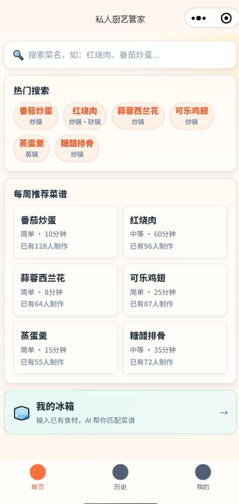
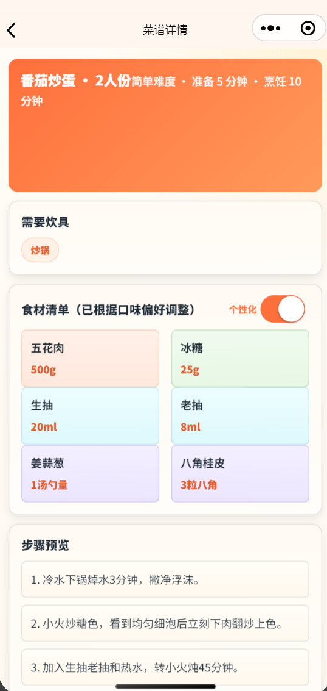
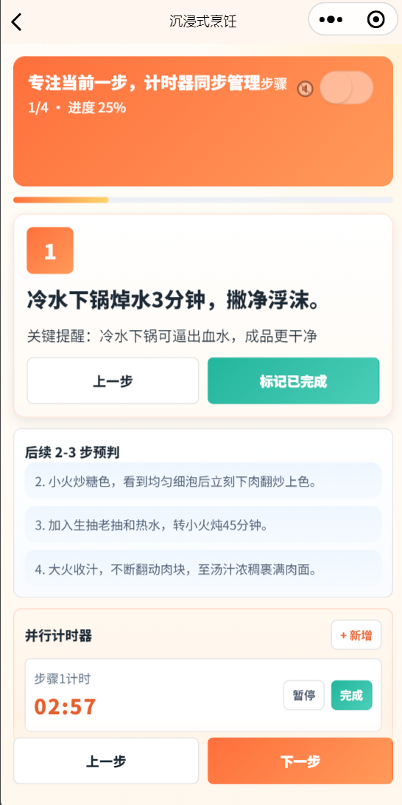
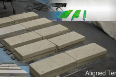
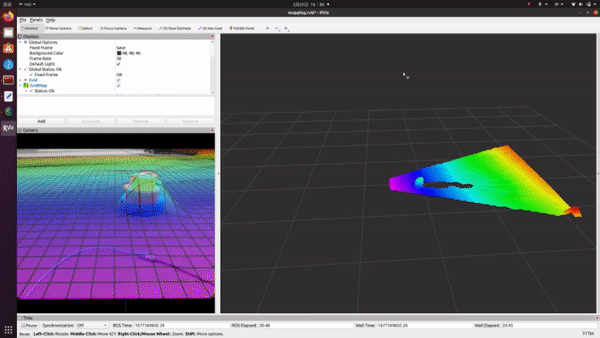

从西安交通大学机械工程，到 UC Berkeley 机器人与自动化系统，再到禾赛的量产控制算法实践，我的工作始终围绕“让系统在真实世界稳定运行”展开。
这意味着我不只写算法，也会处理传感器、执行器、通信链路、验证流程与产品约束；既做过实验室里的腿式机器人任务，也做过面向百万台量产的控制系统。
Capabilities
从西安交通大学机械工程，到 UC Berkeley 机器人与自动化系统，再到禾赛的量产控制算法实践，我的工作始终围绕“让系统在真实世界稳定运行”展开。
这意味着我不只写算法，也会处理传感器、执行器、通信链路、验证流程与产品约束；既做过实验室里的腿式机器人任务，也做过面向百万台量产的控制系统。
扫描器控制建模、嵌入式实现、验证闭环与可靠性问题收敛。
CPG、Bezier 参考轨迹、精确落脚、带球与初步 sim2real 验证。
分层 PPO、高度图规划、多摄像头感知、序列学习与环境自适应。
从需求拆解、交互原型、前后端到多模态模型编排和自动化测试。
Selected Work



一个由我独立推进的微信小程序项目，从产品结构、交互原型到后端架构与模型编排全部落地，并围绕真实使用流程做成了完整可演示版本。


在 UC Berkeley Hybrid Robotics Lab 参与通用精确落脚控制研究，目标是在复杂地形与多障碍场景中建立更通用的腿式机器人运动控制框架。
围绕未知地形下的精准射门问题，构建稳健运动控制、踢球规划和多摄像头感知的完整技术链路。
在西安交通大学机器人与智能系统研究所担任队长，围绕动态环境中的导航效率和避障稳定性完成整套系统设计。
Timeline
参与 4 款扫描器开发，其中 1 款已达百万台级量产；在有限算力平台上实现 0.01° 级控制精度，并累计处理数百项可靠性问题。
围绕复杂地形通行、踏石跨越与 sim2real，参与 CPG 参考轨迹、分层控制和高度图规划链路设计。
围绕陌生地形下 2-3 次试射快速自适应，尝试用离线序列学习完成精准射门策略建模。
完成路径规划与动态避障系统，兼顾传感器接入、控制实现与机械结构设计，形成较强的项目拆解与组织能力。
获得机器人格斗大赛一等奖、国家级大创一等奖等成果，也在这一阶段建立了对“带队做成事”的初步理解。
Capability Stack
建模、补偿、嵌入式实现、验证闭环与可靠性收敛。
CPG、Bezier 轨迹、足端控制、带球与精确落脚任务。
PPO、分层策略、离线学习、环境随机化与 goal relabeling。
激光雷达感知、全局路径规划、局部轨迹优化与动态避障。
Prompt 设计、结构化输出、模型编排、接口封装与自动化测试。
从实验验证到量产导入，覆盖需求拆解、联调、问题定位与结果复盘。
Awards
中国智能机器人格斗大赛（中国公开赛，前 5%）
国家级大学生创新创业训练计划
中国大学生智能机器人创意大赛（前 15%）
校级优秀班干部、社会活动先进个人、法士特齿轮奖学金